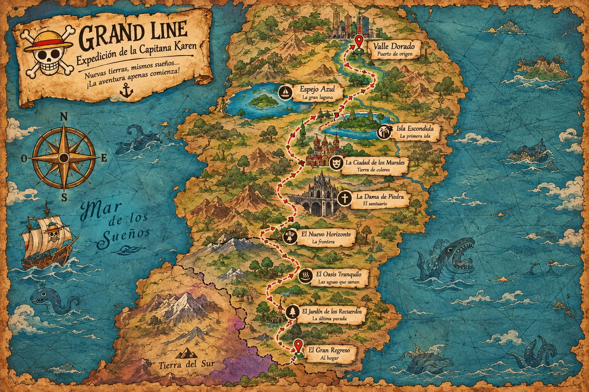

Solo el Primer Oficial puede acceder a la configuración de la expedición.
Sesión activa.
Estos ajustes no aparecen en el historial de la Capitana.
Resetea territorios, misiones, Berries y recompensas. Conserva la bitácora.